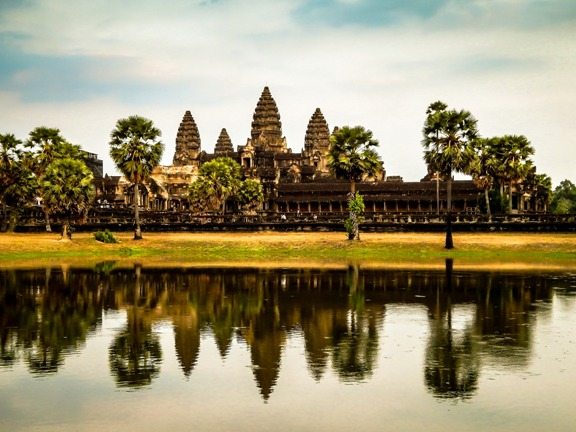
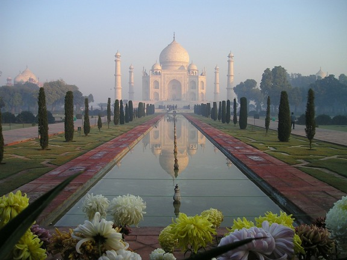
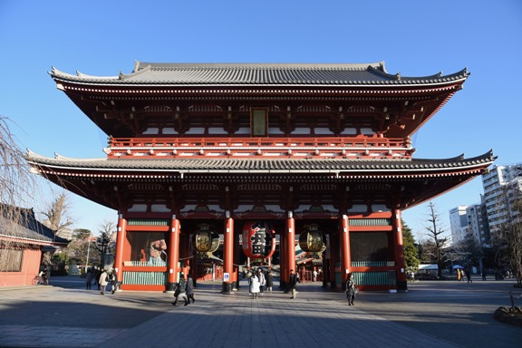

Asia, cuna de la sabiduría y la filosofía. Considerada a lo largo de la historia por todos los estrategas militares como un continente imposible de conquistar. A pesar del paso del tiempo y el avance tecnológico por parte de la humanidad su pobladores han sido capaces de mezclar con éxito sus milenarias tradiciones con el mundo moderno.
Angkor Wat
El lugar donde nació la idea de crear viajes divertimento.
Al oeste de Camboya, en mitad de la jungla se encuentra el complejo de templos de Angkor Wat, máximo exponente de la arquitectura Jemer y considerado su ciudad sagrada.
Déjate atrapar por la mística atmósfera que rodea a este templo.

Templo de Angkor Wat
Para descubrir más cosas sobre Angkor Wat accede a la Wikipedia pulsando aquí.
Taj Mahal
Al norte de la India, en la mística región de bengala se encuentra la ciudad de Agra en donde hace más de 400 años se erigió el Taj Mahal, símbolo del amor eterno e incondicional que profesaba el emperador Sha Jahan a su esposa Mumtaz Mahal.

El Taj Mahal
Para descubrir más cosas sobre el Taj Majal accede a la Wikipedia pulsando aquí o accede a nuestra sección multimedia.
Tokio
La ciudad en donde la tecnología más moderna convive con las tradiciones más antiguas, todo ello bajo la atenta mirada del imponente monte Fuji.
En Tokio puedes elegir si quieres viajar al futuro dirigiéndote al barrio de Akihabara o si prefieres viajar al pasado eligiendo visitar cualquiera de los innumerables templos y jardines existentes en la ciudad.

Uno de los numerosos templos en Tokio
Para descubrir más cosas sobre Tokio accede a la Wikipedia pulsando aquí o accede a nuestra sección multimedia.
¿No encuentras tu destino ideal en la web?
No te preocupes. Contacta con nosotros y te asesoraremos sobre otros lugares.